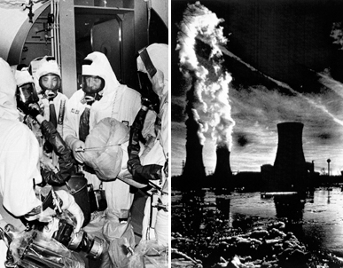

Three Mile Island Accident
A Failure of Systems: In the early morning hours of March 28, 1979, a series of relatively minor mechanical failures at the Three Mile Island Nuclear Generating Station near Harrisburg, Pennsylvania, escalated into the most significant accident in U.S. commercial nuclear power history. It began when a cooling system pump failed, causing the reactor to automatically shut down. However, a vital relief valve became stuck in the open position. Because the control room instruments provided ambiguous data, the operators—believing the system was actually overfilled with water—made the fatal decision to manually override the emergency cooling system, effectively starving the reactor core of its vital coolant. With the cooling water drained away, the intense heat from the nuclear fuel began to rise uncontrollably. Within hours, the zirconium cladding of the fuel rods ruptured, and the uranium pellets began to melt. This created a partial meltdown, where approximately half of the reactor core turned into a molten mass of radioactive material.

As the crisis deepened, a large bubble of hydrogen gas formed inside the containment building, leading to fears of a massive explosion. While a small amount of radioactive gases was intentionally released into the atmosphere to relieve pressure, the thick concrete containment vessel successfully prevented a catastrophic breach, sparing the surrounding population from a massive radiation leak.
A Crisis of Communication: The technical failure was compounded by a total breakdown in public communication. Conflicting reports from plant officials and government agencies led to widespread panic and confusion. Although the actual health impact was eventually determined to be negligible, the sight of thousands of terrified residents, particularly pregnant women and children, fleeing the area became the defining image of the disaster.
Key Facts
Date: March 28, 1979
Location: Londonderry Township, Pennsylvania (near Harrisburg)
Casualties: No immediate deaths or injuries; widespread public panic and evacuation; multi-billion dollar cleanup effort
Cause: A combination of equipment failure (stuck relief valve) and human error, where operators miscalculated the reactor's water levels and shut off the emergency cooling system
The event was further intensified by the fact that the movie The China Syndrome—which depicted a fictional nuclear meltdown—had been released in theaters only 12 days prior, making the public's worst fears feel terrifyingly real.
The Three Mile Island accident served as a massive turning point for the nuclear power industry. While no one died as a direct result of the accident, it effectively halted the expansion of new nuclear power plants in the United States for over 30 years. The disaster exposed critical flaws in human-factors engineering, operator training, and emergency response communication. It directly led to the creation of the Institute of Nuclear Power Operations (INPO) and sparked a global overhaul in safety regulations.